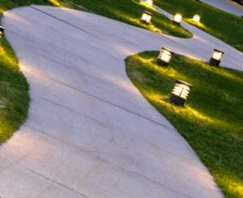
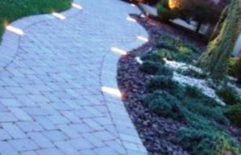

Качественный электромонтаж в Санкт-Петербурге и ленобласти, стаж 12 лет. Частный электрик, недорого и качественно.
Тел. 8 904 642 08 57 Николай.

Организация освещения ландшафта загородного участка.
Частный электрик недорого.
Фонари и осветительные устройства всегда выполняли двойное предназначение. Эти декоративные элементы дополняют выбранный дизайнером архитектурный стиль, одновременно освещая отдельные области загородного участка или домашнего интерьера. Продуманное освещение наделяет дачную территорию таинственной атмосферой, в саду или во дворе образует неоновую подсветку, наблюдаемую на центральных городских улицах. Процесс организации освещения дачи сопровождается индивидуальными особенностями, поэтому ландшафтным дизайнерам необходимо следовать определенными правилам. Данный тип освещения обычно создается в релаксационных областях дачной территории, детских игровых площадках, кортах для игры в теннис. Он равномерно распространяет по территории потоки яркого света, излучаемые достаточно мощными галогеновыми, ртутными, а также натриевыми лампами. Высотой размещения осветительного устройства подбирается оптимальный параметр радиуса пятна светового потока. Подъездные пути к загородному дому или широкие садовые дорожки оборудуются фонарями, находящимися на пяти- или десятиметровой высоте. Для спортивных площадок оптимально подходит высота установки светильников, достигающая семи или девяти метров. Дорожкам и лужайкам хватает двух или пяти метров высоты световых источников. Освещением заливного типа иллюзорно уменьшаются габариты пространства. Поэтому дизайнеры аккуратнейшим образом его используют на участках с небольшим параметром площади. Также необходимо предотвращать попадание в глаза яркого света, поэтому приобретаемые осветительные приборы оборудуются матовыми плафонами, образующими рассеянные световые потоки. Свет, излучаемый современнейшими моделями освещающих устройств, попадает на верхний экран. Отразившиеся от него фотоны достаточно мягко освещают нужную дизайнеру территорию. Такое освещение оборудуется на поворотах, лестницах, входах и остальных подобных территориях. Оно облегчает людям и посетителям участка ориентацию в пространстве посредством работы среднемощных светильников, высота размещения которых достигает 1-1,5 метра. Функциональность сопровождающего освещения спасает людей, прогуливающихся ночью по садовым дорожкам, от возникновения травм при неосторожной ходьбе. Удачное размещение освещающих приборов способно выделять отдельные части архитектурных сооружений и ландшафтных ансамблей, концентрируя на них взгляды владельцев и посетителей облагороженной территории. Специальный светильник маячок, присутствующий на берегу дачного пруда, наделяет водоем таинственной атмосферой. Небольшой тротуарный фонарь добавляет больше романтичности дорожке из гравия. Если в саду необходимо сделать иллюзию сказочного леса, используется декоративная подсветка. Она образуется посредством слаженной работы системы из миниатюрных светильников 0,3 или полуметровой высоты, маленьких прожекторов и фонарей для искусственно созданных водоемов. Декоративная подсветка способна самостоятельно освещать территорию, комбинироваться со среднемощными светильниками. Поставленные на землю фонари направленного светового потока выделяют древесные верхушки, альпийскую горку или садовые скульптуры. Выбор освещающих устройств происходит согласно индивидуальным предпочтениям покупателя. Магазины торгуют огромнейшим ассортиментом фонарей для дачного участка, но дизайнеры руководствуются актуальными тенденциями формирования наружного освещения. Среди покупателей распространено обустройство оригинальной подсветки. Она предусматривает наличие замаскированного от человеческого взгляда светильника, видимости только одного ярко освещенного фрагмента ландшафта. Обычно подобным образом выделяется покрытый плющом угол здания, цветочная композиция или часть крыльца. Правильно смонтированными светильниками спотами формируется иллюзия яркого пятна света. Оригинальный облик имеют встраиваемые освещающие устройства. Небольшую часть корпуса подобных изделий можно размещать непосредственно в стене, закапывать в землю. Новейшие средства освещения ландшафта загородного участка представлены встраиваемыми светильниками, оборудованными специальными отражателями, способными изменять величину угла поворота. Они эффективно освещают сложнейшие области садовых дорожек. Любители классики предпочитают покупать старинные фонари, оборудованные латунными элементами. Также хорошо реализуются светильники, оформленные в разных современных стилях. Дизайнеры применяют необычные шарообразные освещающие приборы, размещенные непосредственно на газонной траве или прудовой водной поверхности. Люди, вспоминающие романтику туристических походов, покупают необычные светильники, имитирующие пламя костра. Любителям экономии нравятся фонари, оборудованные специальным программируемым детектором движения. Это устройство самостоятельно включает светильник на всю ночь, выключая его только перед наступлением утреннего времени суток. Сенсоры инновационного светильника воспринимают тепловую энергию от перемещающихся объектов, посылая фонарю сигнал включения при непосредственном приближении людей или транспорта. Владельцы загородных участков начали декорировать свои садовые насаждения гирляндами и особыми шнурами, излучающими свет. Современные тенденции ландшафтного дизайна запрещают смешивать используемые стили. Поэтому необходимо соблюдать единообразие оформления и целостность композиции освещающих приборов, существующих на облагораживаемой территории участка.Типы освещения ландшафтного участка.


Заливное освещение.
Сопровождающее освещение.
Использование освещения в ландшафтном дизайне.
Использование модных фонарей.
 Поменять проводку в квартире.
Поменять проводку в квартире. Сколько будут стоить материалы.
Электрика в загородном доме стоимость работ.

Замена электропроводки в панельном доме.
Расценки на электропроводку квартир.
Замена проводки в хрущевке.
Электромонтаж в частном доме.
Электрика в загородном доме.
Сколько стоит замена электропроводки в двухкомнатной квартире?.
Электрик в новостройку однокомнатная квартира недорого.

Сколько стоит поменять электропроводку в 3-х комнатной квартире.